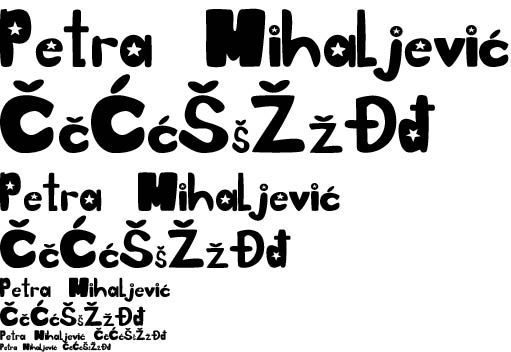
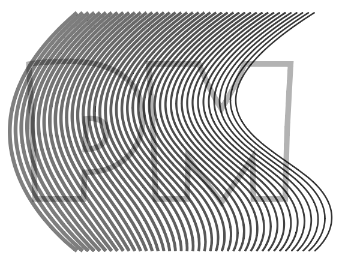
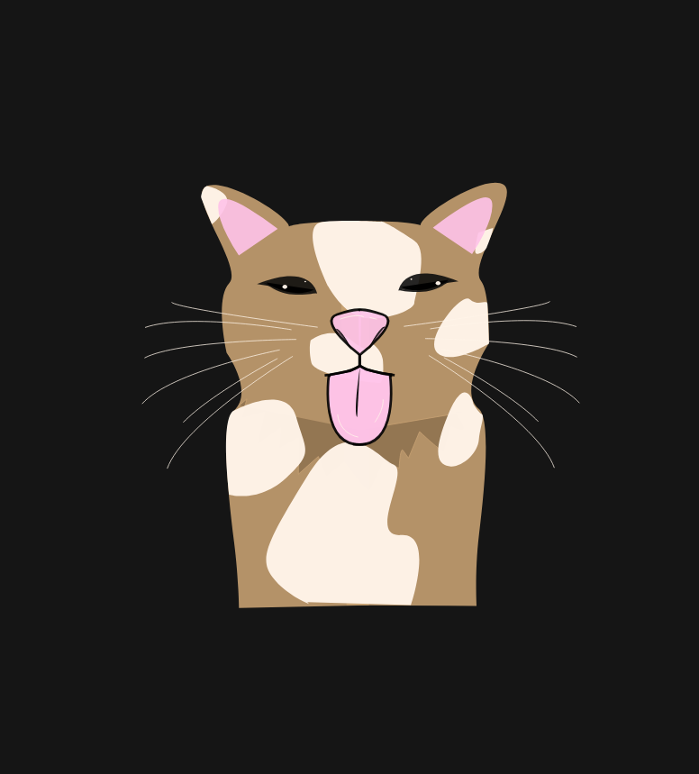
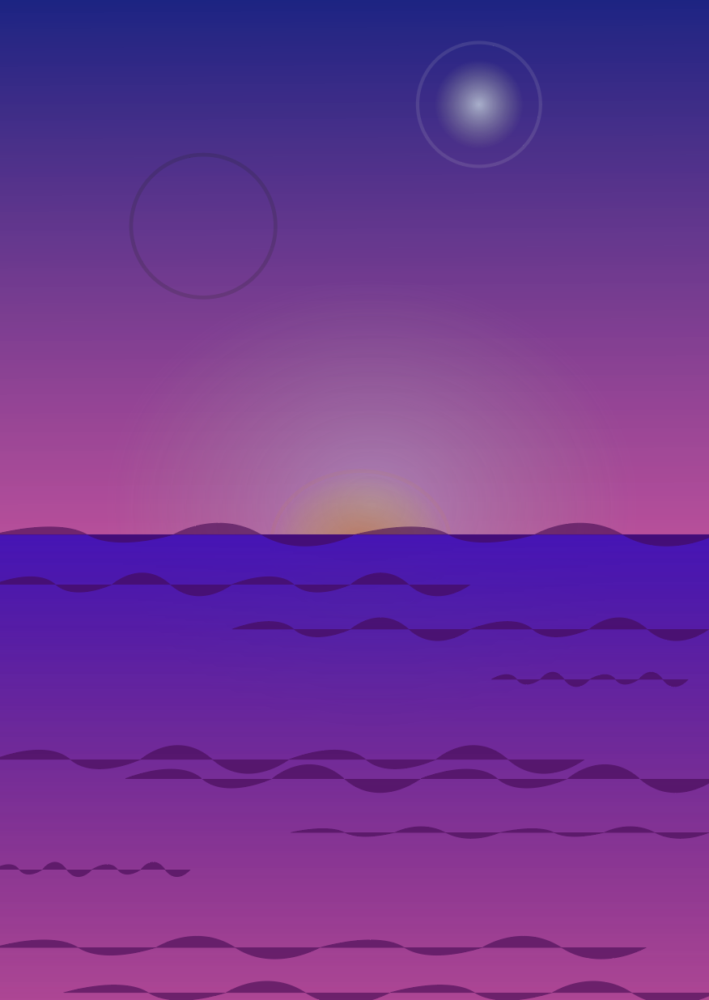
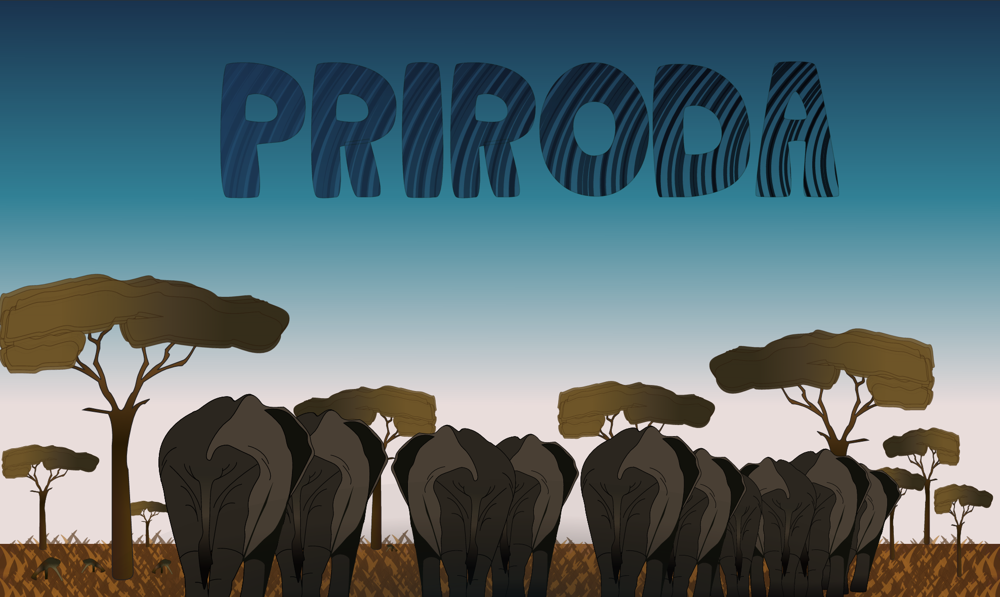
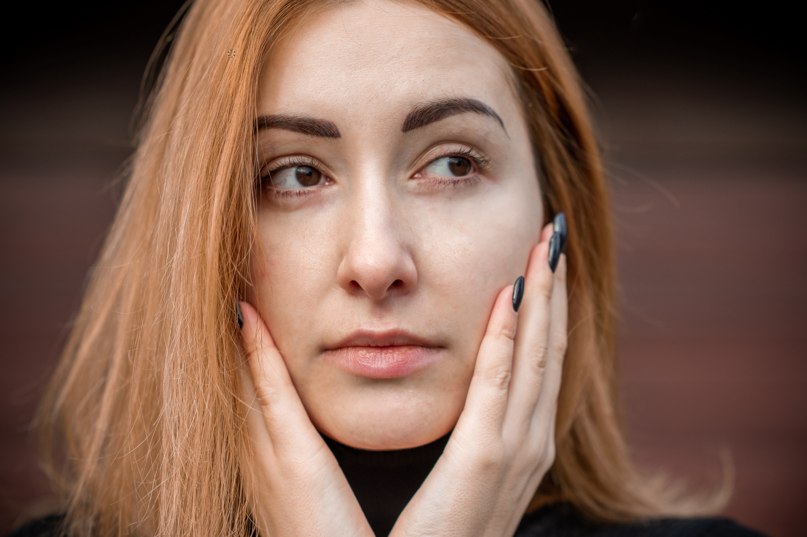
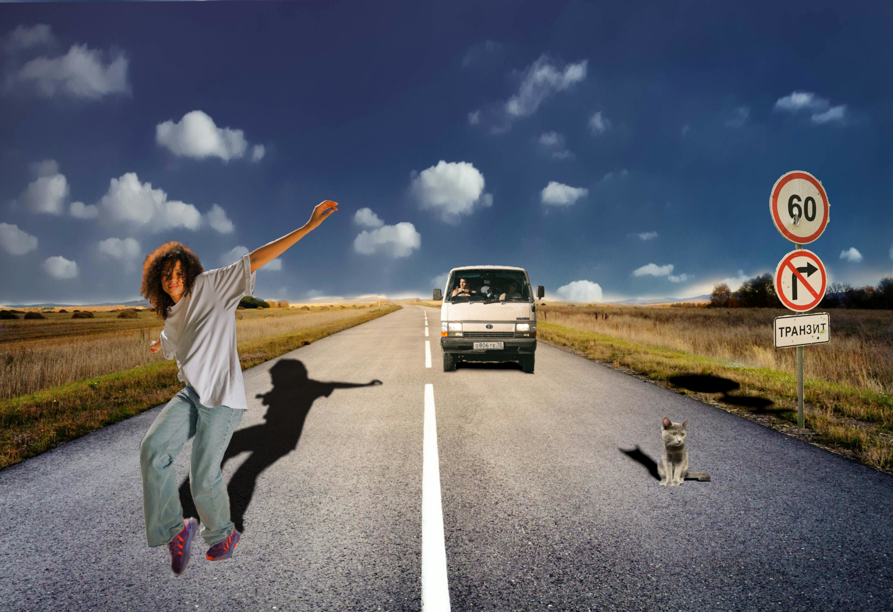
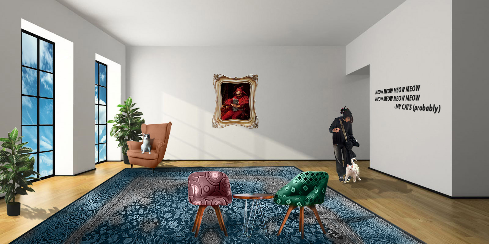

Vježbe
Vježba 1 – font
Izrada vlastitog fonta.
Vježba 2 – bezierova krivulja, precizno crtanje
Crtanje Bezierovih krivulja u vektorskim programima u zadanom koordinatnom sustavu.
Vježba 3 – boja, transformacije
Zadatak je bio traceati sliku te napraviti svoju verziju nje pomocu dupliciranja, rotacije, transparencije.
Vježba 4 – gradijenti, transparencija
Izradivanje slike koristeći se alatima poput pen, dupliciranja, transparencije te kreiranje swatch boja.
Projektni zadatak 1
U ovome zadatku smo trebali traceati zadanu fotografiju te ju napraviti koristeći alate koje smo naučili koristiti u prethodnim vježbama.
Vježba 5 – retuširanje
touch up forografije pomoću photoshopa
Vježba 6 – koloriranje
koloriranje vlastite fotografije koju smo prvo napravili crno bijelom.

Vježba 7 – fotomontaža
Ubacivanje različitih elemenata u sliku.
Projektni zadatak 2
U ovome zadatku smo trebali kombinirati elemente iz različitih fotografija pomoću tehnika koje smo radili na prethodnim vježbama
Vježba 8 – cinemagraf
napraviti gif koji je dijelom statičan

Vježba 9 – video obrada
Umetanje videa, zvuka, efekata
Povratak na vrh stranice!